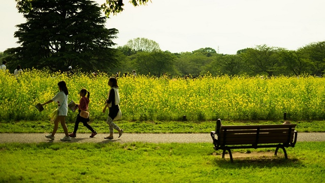

子どもについて悩みが尽きないのは親の定めかも知れません。
子どもがなかなかヤル気を出してくれないとか、反抗期になって手を焼いていますという相談を今までたくさん受けてきました。
私自身も子どものことでは色々悩まされたので親の気持ちを人ごととは思えないところがあります。
ただ、親の子育ての悩みは色々あっても結局のところ一つに集約されるのではないでしょうか。
それは「子どもが親の思い通り」ではないということです。
子どもは思い通りにならない！
多くの親の悩みは要するにこれに尽きるということです。
親は子どもにとって何がプラスか知っていると思っています。人生経験も子どもより豊富だし、世の常識や社会のルールも分かっている。それらの「常識」や「ルール」そして自らの個人的経験に照らして、我が子の現状を判断して何とか矯正しようとします。
それが子どものためだと思っているからです。
「いましっかり勉強しないと将来困るぞ」
「そんな態度じゃ社会に出たら通用しないよ」
「1度始めたことは最後までやり通せ」
「そんな甘い考えでどうする。世の中は厳しいんだぞ」
こうして親は子どものために色々言って聞かせているつもりですが、ほぼ全くといって良いほど子どもの心に響きません。
その証拠に子どもの態度は、どんなに上の文言を「言って聞かせ」たところで変化しないからです。
さらに親もまた自分の親から同じようなことを子ども時代に聞かされたのに、ほとんど記憶してないことからも明らかです。
子どもに理想を求めないようにする
では、子どもが思い通りにならないとなぜ親は悩み心配しイライラするのでしょう。
答えはシンプルで、親には「こんな子どもになって欲しい」という理想があるからです。
この「理想」は人によって様々です。「自分の考えを明確に主張できる人」などのようにハッキリしたものから「ソコソコ人並みでよい」に至るまで、意識するにせよしないにせよ大抵の親は何となく「こんな子であって欲しい」という漠然としたイメージをもっているのです。
たとえば、大手企業に勤める父親は息子にもそれなりの会社に行って欲しいと思うものです。公務員ならやはり子どもに公務員になって欲しい。医師なら子どもも医学部へ行って後を継いで欲しいとか…。
そしてそうなるためには今このくらいの成績を取っていて欲しい。そうじゃないとロクな学校にしか行けない。そうなると困る…など。
職業だけでなく、母親は息子に「優しく誰にでも親切な人になって欲しい」、娘には「繊細で気配りのできる人になって欲しい」などと願うものです。
「いや、ウチの子はそんな大層な期待ではなく健康でごく普通の子でよい」
それも１つの理想です。健康でも普通でもない子にとってそれは大きなハードルかも知れないからです。また普通であることが人並みにソコソコちゃんとしていることなら、それはそれでそこから少しでも外れるとガッカリするという点では、親の期待であることに変わりないからです。
こうして大なり小なり親は我が子に「こうあって欲しい」という何らかの理想像―期待―をもっているわけですが、問題があるとすればその「理想像」に照らして「だから今はこうあるべき」「こうでないといけない」と、子どもの「今」にダメ出しをしてしまうことです。
だからこそここはゼロベースで考えなくてはいけません。
まず第１に親は無意識に子どもに理想を求めていることに気づくこと。そしてそれは親の勝手な望みであって、子どもの幸福に直接つながっていないと自覚することです。
そして第２に自覚すべきは、子どもの「今」に「こうあるべき」「こうでないといけない」と思っていること自体思い込みに過ぎないかも知れないということ。
それは親自身が世間で常識とされていることやルールに無自覚に従っているだけかもしれないと省みるということです。
親の「こうあるべき」も必ずしも子どもの幸福に直結していないことに気づいて欲しいと思います。
ルールに縛られすぎない
たとえばよくあることですが、小さいころ親から「さっさとしなさい」「早くやりなさい」と急かされて育った子どもは、自分がノロマであるというコンプレックスをもち我が子にも同じことを言ってしまっていることがあります。
これなど「自分が人よりノロマである」という思いが子どもの中に同じ性質を見たとき、必要以上にコンプレックスが刺激され過剰に反応してしまう例です。
同じく「勉強しないと将来困るぞ」と言われて育った子どもは、我が子にも同じことをくり返して言う傾向があります。
勉強しない→良い学校、会社に入れない→将来不幸というルールを握りしめている親は今でも多いのですがこれも改めて考え直してみる必要がありそうです。
当たり前ですが、勉強しないことや良い学校会社に入ること、将来幸せに生きることはそれぞれ全く別の話であって関連していないのだということに気づいて欲しいのです。
つまり、知らず知らずのうちに我が子をその枠（ルール）にはめ「思い通りに」しようとしていたことに気づけば子どもとの関係も自ずと変化し、事態が改善する可能性がひらけるのです。
親が「こうあるべき」という呪縛から解放されると子どもも解放されるのです。
「思い」を捨て今を楽しむ
子どもが思い通りにならないということは親に「思い」があるからで、その「思い」がなくなれば「思い通りにならない」という現実も消滅してしまいます。
そうすれば親の悩みも消えてなくなるということになります。
つまり理想も期待も持たない。子どもの「今」としっかり向き合い、一緒に泣いたり笑ったりして心を通わせる。一回しかない子どもの成長を共に楽しむ姿―子育てを楽しむ姿勢―こそが本来の親のあり方ではないかと思うのです。
子どもはアッという間に大人になります。幼稚園、小学校、中学校そして高校大学、社会人と色々大変な時期もあるにせよ、後で振り返ってみれば全て一夜の夢の如く過ぎ去っていきます。
その短い期間、子どもは色々な側面を見せてくれます。小学生のときは小学生としての中学生のときは中学生としての、様々な問題や出来事を起こしてくれます。
我が家の子どもたちもそうでした。
「友だちとケンカして悩んでいる」
「部活で疲れ切っている」
「成績が下がって志望校の変更を迫られている」
「学校へ行きたがらない」…等々。
時には親も巻き込まれ、子どもに振り回されることもありますが、それでも貴重な時間であることに変わりありません。
子どもがいるからこそ私たち親も子どもの成長と関わり学ぶことができるのです。
「今度はどんな展開が待っているのか」とむしろワクワクした気持ちで、今この瞬間の子育てを楽しむ心境でいること。
何も心配せず期待も理想ももたない。そしてかけがえのない今という子育ての瞬間を楽しむ。これが結局のところ最強の親の態度だと言えます。